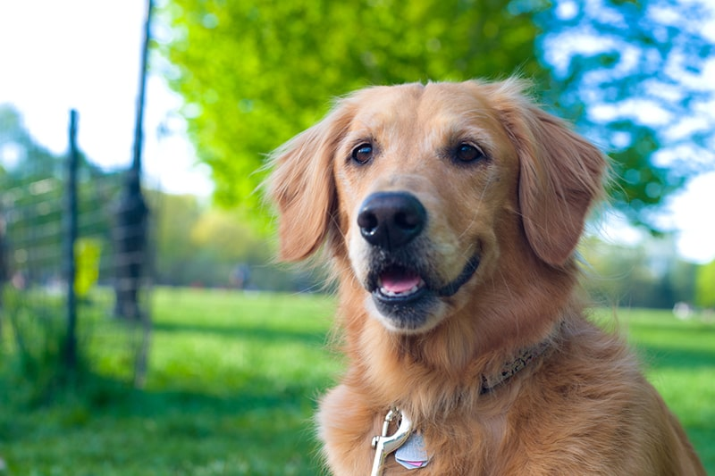

Presentación

El Golden Retriever es un perro de tamaño grande con una estructura atlética y armoniosa. Su pelaje es de longitud media, denso y resistente al agua, con colores que van desde el dorado claro hasta tonalidades más intensas. Los machos suelen medir entre 56 y 61 cm de altura y pesar entre 29 y 34 kg, mientras que las hembras miden entre 51 y 56 cm con un peso de 25 a 29 kg. Esta combinación de tamaño y pelaje le da un aspecto elegante y deportista, ideal para una vida activa.
Personalidad
Esta raza destaca por su carácter amistoso, inteligente y equilibrado. Su temperamento dócil lo convierte en un excelente compañero familiar, paciente con los niños y sociable con otras mascotas y personas. Es un perro que disfruta trabajar con su dueño y aprender, por lo que suele responder muy bien al adiestramiento.
Origen
Originario de Escocia, el Golden Retriever fue desarrollado en el siglo XIX como un perro cobrador para recuperar presas durante la caza, tanto en tierra como en agua. Con el tiempo, su amabilidad y versatilidad lo han convertido en una de las razas más populares y queridas como mascota familiar y perro de ayuda en actividades como terapia y búsqueda.
Salud
Son generalmente perros saludables con una esperanza de vida de unos 10 a 12 años. Sin embargo, pueden ser propensos a problemas de cadera y codo, así como a ciertos problemas oculares y cardíacos. Mantener un peso adecuado, realizar ejercicio moderado y revisiones veterinarias periódicas ayuda a prevenir o detectar tempranamente posibles afecciones.
Aseo
Debido a su pelaje denso y doble, requiere un cuidado de mantenimiento regular. Es recomendable cepillar el pelo varias veces por semana para eliminar pelo muerto y evitar enredos, con especial atención durante las temporadas de muda. Los baños pueden hacerse cada cierto tiempo, y se deben limpiar las orejas, recortar las uñas y cuidar la higiene dental como parte del aseo habitual.
Nutrición
Como perro de mayor tamaño y alta energía, necesita una dieta equilibrada rica en proteínas y ajustada a su etapa de vida y nivel de actividad. Es importante controlar las porciones para evitar el sobrepeso, ya que esta raza tiende a ganar peso con facilidad. Una alimentación adecuada y adaptada a sus necesidades contribuye a mantener la salud articular y general.